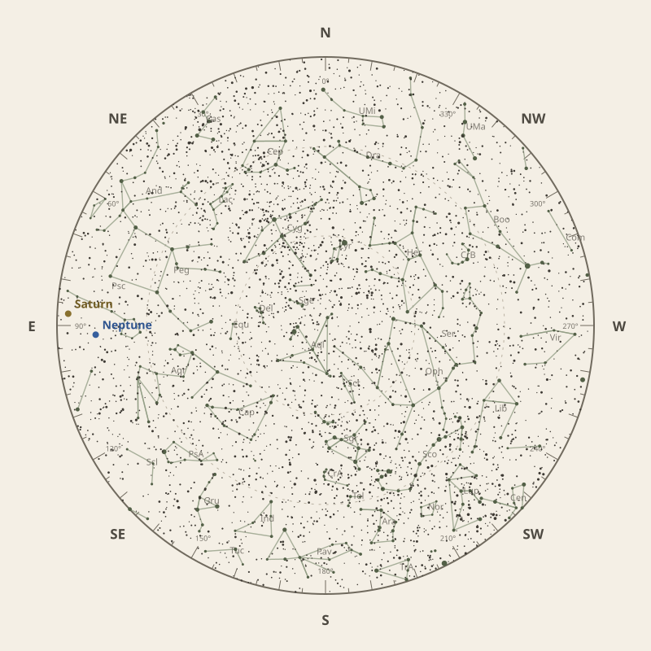

Monthly field almanac
August 2026
Observing reference for Malabar Coast, India.


The month in one sentence · at a glance
Perseids peak on 12 Aug 2026 under 4% Moon, with the radiant reaching about 37° before dawn.
- New Moon
- 13 Aug Darkest skies
- Full Moon
- 29 Aug Brightest skies
- Best dark window
- 17 Aug 10h 47m
Conditions now
Is the sky likely to cooperate?
Checking the sky near Malabar Coast, India…
Find your bearings
The mid-month sky at 10 pm.
Face the matching compass direction and read outward from the centre toward the horizon.

Night planner
Plan the sky for your date.
Choose an observing date to see astronomical darkness, Moon interference, Galactic Centre visibility and the strongest planets.
Best low-Moon dark periods this month
- 7:07 pm–5:54 am10h 47m · 23% Moon
- 7:08 pm–5:54 am10h 46m · 15% Moon
- 7:08 pm–5:54 am10h 46m · 8% Moon
What deserves attention
Top picks for August.
- Milky Way
Milky Way core window
2h 53m with 50° altitude.
- Minor planets
Minor planet 4
81° altitude; magnitude 7.5.
- Planets
Neptune
Best monthly date at 79° altitude.
- Meteor showers
Perseids
Peak conditions: 4% Moon illumination; 37° altitude predawn.
- Planetary events
Mercury greatest western elongation
Morning sky; 19.5° from the Sun.


Moon and darkness
Read the lunar month.
Prefer minimum illumination for faint targets; bright lunar observing belongs near the fullest phase.
Complete lunar data →

Milky Way and deep sky
Recommended core sessions.
- 7:12 pm–1:12 am6h 00m · core to 50°
- 7:11 pm–1:11 am6h 00m · core to 50°
- 7:11 pm–1:01 am5h 50m · core to 50°


Planet visibility
Useful at twilight.
Evening
- Venus15 Aug · 7:00 pm33° · Good
Predawn
- Saturn5 Aug · 4:30 am82° · Excellent
- Uranus31 Aug · 6:00 am80° · Excellent
- Neptune3 Aug · 4:00 am79° · Excellent
- Mars31 Aug · 6:00 am49° · Excellent
- Jupiter31 Aug · 6:00 am19° · Fair
- Mercury2 Aug · 6:00 am15° · Fair
Other opportunities
Events worth noting.
- Minor planet 481° altitude; magnitude 7.5.
- PerseidsPeak conditions: 4% Moon illumination; 37° altitude predawn.
- Mercury greatest western elongationMorning sky; 19.5° from the Sun.


Data and downloads
Need every detail?
2 comet calculations are unavailable; they remain in the data library.
Occultation times use a smooth lunar limb; confirm grazing events with IOTA Occult 4.